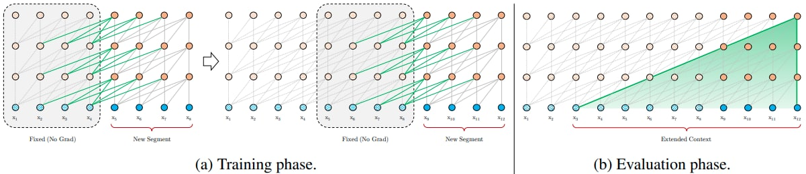
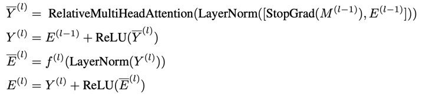
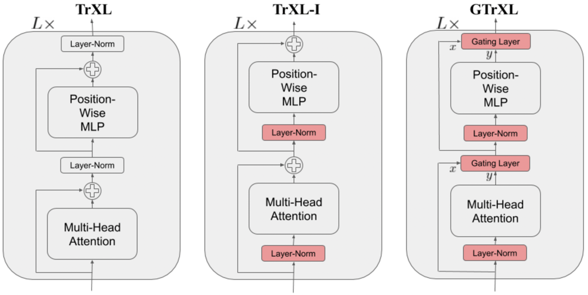

GTrXL¶
Overview¶
Gated Transformer-XL, or GTrXL, first proposed in Stabilizing Transformers for Reinforcement Learning, is a novel framework for reinforcement learning adapted from the Transformer-XL architecture. It mainly introduces two architectural modifications that improve the stability and learning speed of Transformer including: placing the layer normalization on only the input stream of the submodules, and replacing residual connections with gating layers. The proposed architecture, surpasses LSTMs on challenging memory environments and achieves state-of-the-art results on the several memory benchmarks, exceeding the performance of an external memory architecture.
Quick Facts¶
GTrXL can serve as a backbone for many RL algorithms.
GTrXL only supports sequential observations.
GTrXL is based on Transformer-XL with Gating connections.
The DI-engine implementation of GTrXL is based on the R2D2 algorithm. In the original paper, it is based on the algorithm V-MPO.
Key Equations or Key Graphs¶
Transformer-XL: to address the context fragmentation problem, Transformer-XL introduces the notion of recurrence to the deep self-attention network. Instead of computing the hidden states from scratch for each new segment, Transformer-XL reuses the hidden states obtained in previous segments. The reused hidden states serve as memory for the current segment, which builds up a recurrent connection between the segments. As a result, modeling very long-term dependency becomes possible because information can be propagated through the recurrent connections. In order to enable state reuse without causing temporal confusion, Transformer-XL proposes a new relative positional encoding formulation that generalizes to attention lengths longer than the one observed during training.
Identity Map Reordering: move the layer normalization to the input stream of the submodules. A key benefit to this reordering is that it now enables an identity map from the input of the transformer at the first layer to the output of the transformer after the last layer. This is in contrast to the canonical transformer, where there are a series of layer normalization operations that non-linearly transform the state encoding. One hypothesis as to why the Identity Map Reordering improves results is as follows: assuming that the submodules at initialization produce values that are in expectation near zero, the state encoding is passed un-transformed to the policy and value heads, enabling the agent to learn a Markovian policy at the start of training (i.e., the network is initialized such that
and ), thus ignoring the contribution of past observations coming from the memory of the attention-XL. In many environments, reactive behaviours need to be learned before memory-based ones can be effectively utilized. For example, an agent needs to learn how to walk before it can learn how to remember where it has walked. With identity map reordering the forward pass of the model can be computed as:  {kind=link}
Gating layers: replace the residual connections with gating layers. Among several studied gating functions, Gated Recurrent Unit (GRU) is the one that performs the best. Its adapted powerful gating mechanism can be expressed as:
Gated Identity Initialization: the authors claimed that the Identity Map Reordering aids policy optimization because it initializes the agent close to a Markovian policy or value function. If this is indeed the cause of improved stability, we can explicitly initialize the various gating mechanisms to be close to the identity map. This is the purpose of the bias in the applicable gating layers. The authors demonstrate in an ablation that initially setting produces the best results.
Extensions¶
GTrXL can be combined with:
CoBERL (CoBERL: Contrastive BERT for Reinforcement Learning):
Contrastive BERT (CoBERL) is a reinforcement learning agent that combines a new contrastive loss and a hybrid LSTM-transformer architecture to tackle the challenge of improving data efficiency for RL. It uses bidirectional masked prediction in combination with a generalization of recent contrastive methods to learn better representations for transformers in RL, without the need of hand engineered data augmentations.
R2D2 (Recurrent Experience Replay in Distributed Reinforcement Learning):
Recurrent Replay Distributed DQN (R2D2) demonstrates how replay and the RL learning objective can be adapted to work well for agents with recurrent architectures. The LSTM can be replaced or combined with gated transformer so that we can leverage the benefits of distributed experience collection, storing the recurrent agent state in the replay buffer, and “burning in” a portion of the unrolled network with replayed sequences during training.
Implementations¶
The network interface GTrXL used is defined as follows:
- class ding.torch_utils.network.gtrxl.GTrXL(input_dim: int, head_dim: int = 128, embedding_dim: int = 256, head_num: int = 2, mlp_num: int = 2, layer_num: int = 3, memory_len: int = 64, dropout_ratio: float = 0.0, activation: torch.nn.modules.module.Module = ReLU(), gru_gating: bool = True, gru_bias: float = 2.0, use_embedding_layer: bool = True)[source]
- Overview:
GTrXL Transformer implementation.
Note
For details refer to Stabilizing Transformer for Reinforcement Learning: https://arxiv.org/abs/1910.06764
- forward(x: torch.Tensor, batch_first: bool = False, return_mem: bool = True) Dict[str, torch.Tensor][source]
- Overview:
GTrXL forward pass.
- Arguments:
x (
torch.Tensor): input tensor. Shape (seq_len, bs, input_size).batch_first (
bool): if the input data has shape (bs, seq_len, input_size), set this param toTruein order to transpose along the first and second dimension and obtain shape (seq_len, bs, input_size). This param doesn’t affects the output memory.return_mem (
bool): if this param is False, return only the output tensor without dict.
- Returns:
x (
Dict[str, torch.Tensor]): dict containing transformer output of shape (seq_len, bs, embedding_size) and memory of shape (layer_num, seq_len, bs, embedding_size)
- get_memory()[source]
- Overview:
Returns memory of GTrXL.
- Returns:
memory: (
Optional[torch.Tensor]): output memory or None if memory has not been initialized. Shape is (layer_num, memory_len, bs, embedding_dim).
- reset_memory(batch_size: Optional[int] = None, state: Optional[torch.Tensor] = None)[source]
- Overview:
Clear or set the memory of GTrXL.
- Arguments:
batch_size (
Optional[int]): batch sizestate (
Optional[torch.Tensor]): input memory. Shape is (layer_num, memory_len, bs, embedding_dim).
The default implementation of our R2D2-based GTrXL is defined as follows:
- class ding.policy.r2d2_gtrxl.R2D2GTrXLPolicy(cfg: dict, model: Optional[Union[type, torch.nn.modules.module.Module]] = None, enable_field: Optional[List[str]] = None)[source]
- Overview:
Policy class of R2D2 adopting the Transformer architecture GTrXL as backbone.
- Config:
ID
Symbol
Type
Default Value
Description
Other(Shape)
1
typestr
r2d2_gtrxl
RL policy register name, refer toregistryPOLICY_REGISTRYThis arg is optional,a placeholder2
cudabool
False
Whether to use cuda for networkThis arg can be diff-erent from modes3
on_policybool
False
Whether the RL algorithm is on-policyor off-policy4
prioritybool
False
Whether use priority(PER)Priority sample,update priority5
priority_IS_weightbool
False
Whether use Importance Sampling Weightto correct biased update. If True,priority must be True.6
discount_factorfloat
0.99, [0.95, 0.999]
Reward’s future discount factor, aka.gammaMay be 1 when sparsereward env7
nstepint
5, [3, 5]
N-step reward discount sum for targetq_value estimation8
burnin_stepint
1
The timestep of burnin operation,which is designed to warm-up GTrXLmemory difference caused by off-policy9
learn.updateper_collectint
1
How many updates(iterations) to trainafter collector’s one collection. Onlyvalid in serial trainingThis args can be varyfrom envs. Bigger valmeans more off-policy10
learn.batch_sizeint
64
The number of samples of an iteration11
learn.learning_ratefloat
0.001
Gradient step length of an iteration.12
learn.value_rescalebool
True
Whether use value_rescale function forpredicted value13
learn.target_update_freqint
100
Frequence of target network update.Hard(assign) update14
learn.ignore_donebool
False
Whether ignore done for target valuecalculation.Enable it for somefake termination env15
collect.n_sampleint
[8, 128]
The number of training samples of acall of collector.It varies fromdifferent envs16
collect.unroll_lenint
25
unroll length of an iterationunroll_len>117
collect.seq_lenint
20
Training sequence lengthunroll_len>=seq_len>118
learn.init_memorystr
zero
‘zero’ or ‘old’, how to initialize thememory before each training iteration.
- _data_preprocess_learn(data: List[Dict[str, Any]]) dict[source]
- Overview:
Preprocess the data to fit the required data format for learning
- Arguments:
data (
List[Dict[str, Any]]): the data collected from collect function
- Returns:
- data (
Dict[str, Any]): the processed data, including at least [‘main_obs’, ‘target_obs’, ‘burnin_obs’, ‘action’, ‘reward’, ‘done’, ‘weight’]
- data (
data_info (
dict): the data info, such as replay_buffer_idx, replay_unique_id
- _forward_learn(data: dict) Dict[str, Any][source]
- Overview:
Forward and backward function of learn mode. Acquire the data, calculate the loss and optimize learner model.
- Arguments:
- data (
dict): Dict type data, including at least [‘main_obs’, ‘target_obs’, ‘burnin_obs’, ‘action’, ‘reward’, ‘done’, ‘weight’]
- data (
- Returns:
- info_dict (
Dict[str, Any]): Including cur_lr and total_loss cur_lr (
float): Current learning ratetotal_loss (
float): The calculated loss
- info_dict (
- _init_learn() None[source]
- Overview:
Init the learner model of GTrXLR2D2Policy. Target model has 2 wrappers: ‘target’ for weights update and ‘transformer_segment’ to split trajectories in segments. Learn model has 2 wrappers: ‘argmax’ to select the best action and ‘transformer_segment’.
- Arguments:
learning_rate (
float): The learning rate fo the optimizergamma (
float): The discount factornstep (
int): The num of n step returnvalue_rescale (
bool): Whether to use value rescaled loss in algorithmburnin_step (
int): The num of step of burninseq_len (
int): Training sequence lengthinit_memory (
str): ‘zero’ or ‘old’, how to initialize the memory before each training iteration.
Note
The
_init_learnmethod takes the argument from the self._cfg.learn in the config file
Benchmark¶
environment |
best mean reward |
evaluation results |
config link |
comparison |
|---|---|---|---|---|
Pong (PongNoFrameskip-v4) |
20 |

|
P.S.：
The above results are obtained by running the same configuration on five different random seeds (0, 1, 2, 3, 4)
For the discrete action space algorithm like DQN, the Atari environment set is generally used for testing (including sub-environments Pong), and Atari environment is generally evaluated by the highest mean reward training 10M
env_step. For more details about Atari, please refer to Atari Env Tutorial .
Reference¶
Parisotto, Emilio, et al. “Stabilizing Transformers for Reinforcement Learning.”, 2019; [http://arxiv.org/abs/1910.06764 arXiv:1910.06764]
Dai, Zihang , et al. “Transformer-XL: Attentive Language Models Beyond a Fixed-Length Context.”, 2019; [http://arxiv.org/abs/1901.02860 arXiv:1901.02860]